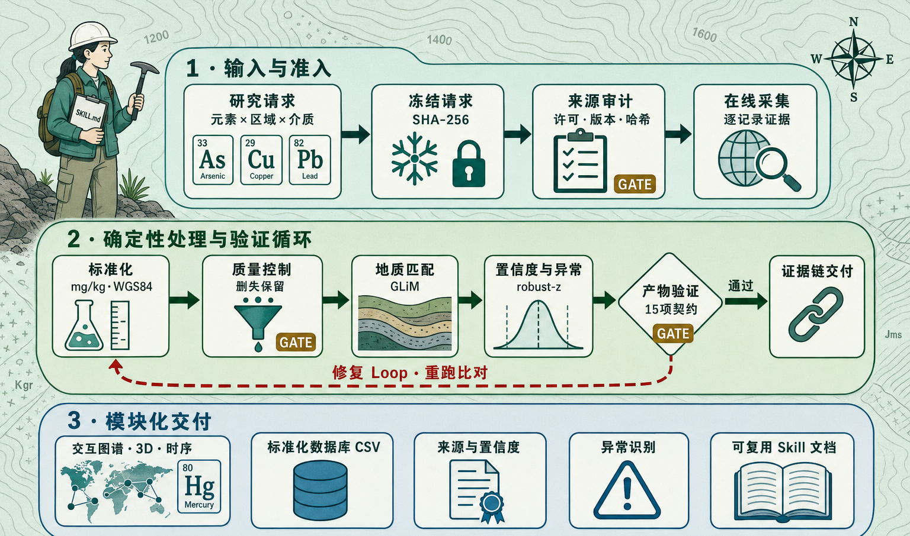
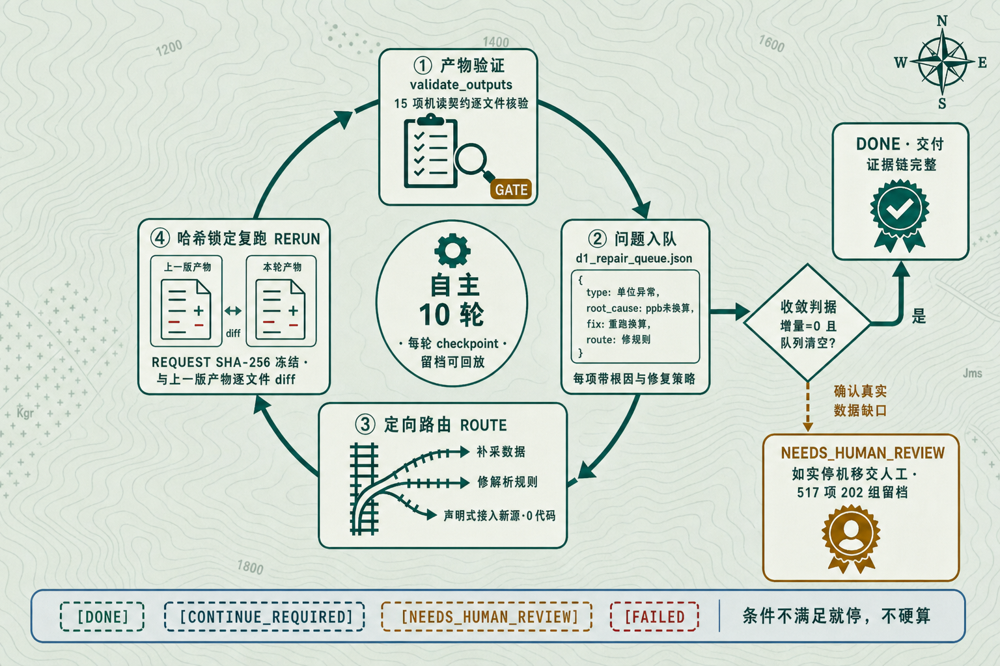
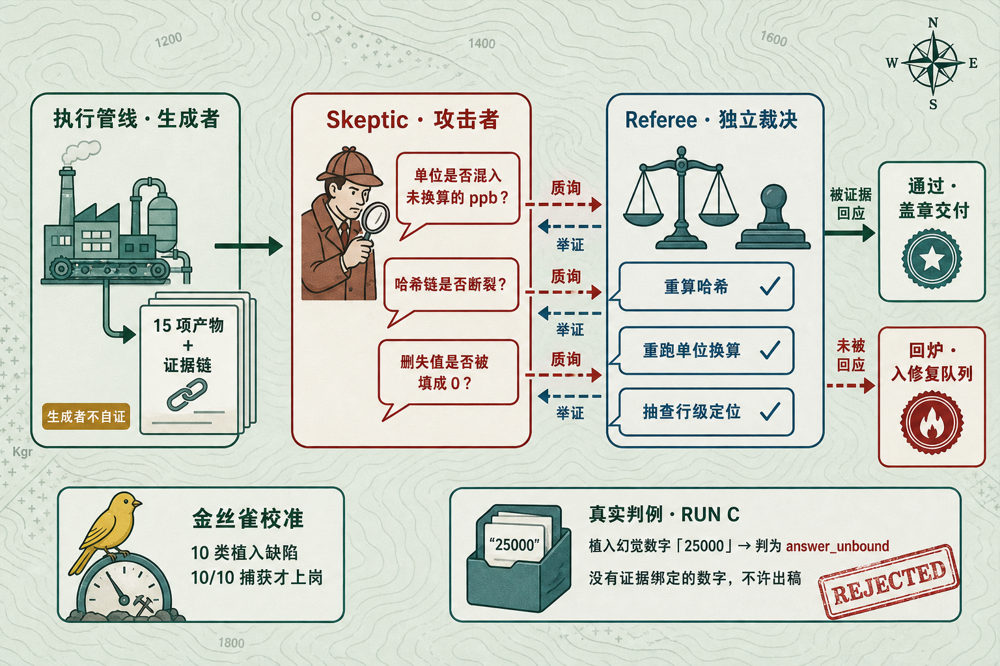
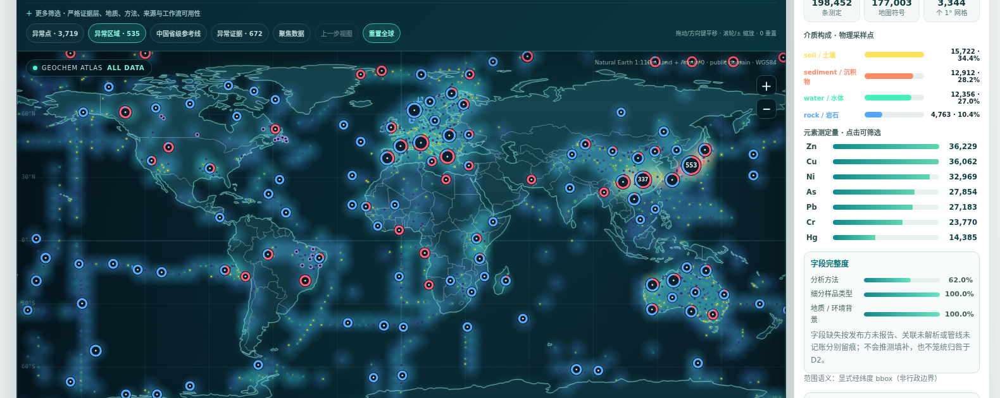
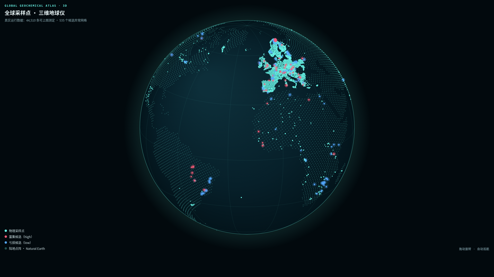
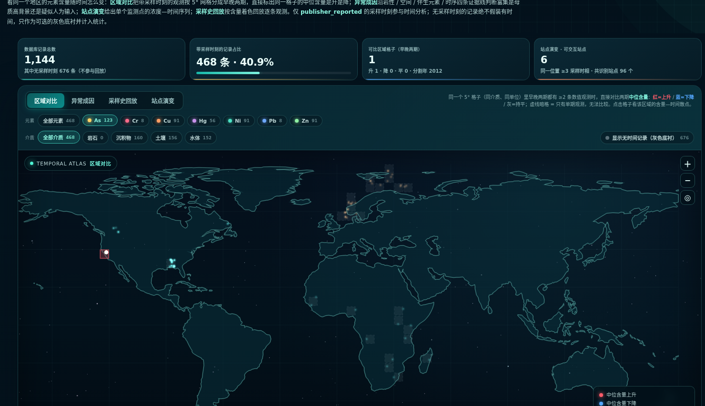
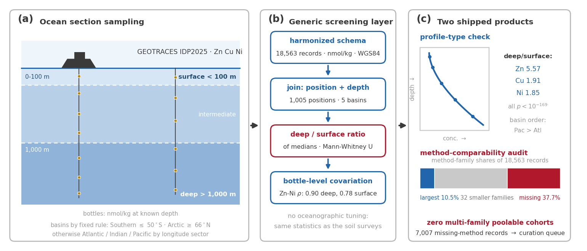

199,730条测定正式入库
100% 记录级溯源可回放原始件
45,753个独立物理样品
四介质同一张表直接联查
35 / 66来源审计准入
31 个候选被门禁拦下
3,721异常筛查候选
只筛查不定罪，判据随行
10 / 10植入缺陷全部捕获
审计器先校准再上岗（RUN C）
393条未过标准化门禁
如实保留，不静默丢弃
REAL RUN · 08-19 23:45 → 08-20 02:38全程自主 · 10 轮循环 · 总时长 2 小时 53 分
1 · Skill 的动机：图好画，可信难MOTIVATION
一张漂亮的分布图，反而可能放大误判
分布图只能说明哪里高、哪里低，真正难的是解释高值——如西南高砷土壤：套通用阈值，自然高背景就被误判成「污染」。缺少方法、地质与时间的共同证据，图越漂亮，误判越有说服力。
分析化学之问不同实验室、单位与测定方法，能直接比较吗？
地球化学之问高值来自母岩与成土过程，还是异常富集？
环境科学之问是长期自然高背景，还是工业排放的人为信号？
地球系统之问何时出现、怎样演化，是否随治理而变化？
GGA 的回答：先建可比较、可追溯的统一底座，再用方法分层 × 地质背景 × 多期观测分开检验两类信号——证据不足就如实报缺口。
就算只求一张图，公开数据还有三道坎
1数据世界极度破碎散落在 USGS、PANGAEA、FOREGS 等平台：有的给 API，有的只有 CSV，有的要翻论文附表。
2凑齐了也不能直接合并mg/kg 与 wt% 并存；介质混杂；坐标基准、分析方法各不相同。
3最磨人的是「未检出」仪器报告「低于检出限」不等于零：直接填 0 或减半代入，统计与异常判断就被悄悄带偏。
核心挑战：AI 的「幻觉」在科研里不可接受
单位算错、坐标颠倒，AI 依然能拼出一张极具欺骗性的精美地图。核心挑战不是「AI 能不能画图」，而是：全自动接管数据处理的同时，每一个数字都绝对可追溯、科学严谨。
因此分工必须清晰：人类给科学直觉、定边界 · Agent 编排与解释 · 确定性脚本包揽全部数值计算。
为守住严谨，我们定了四条底线
① 数字不过模型的手全部数值出自确定性脚本，模型只做编排与解读
② 门禁不过就停机条件不满足如实报缺口，不用近似值硬算
③ 验收员先被考核审计器先抓齐 10 类植入缺陷，才有资格验收产物
④ 每个缺口都记账未达标项逐条登记去向，不静默丢弃
研究者只需要提出一个任务
「使用公开数据生成西欧 · 土壤 · 砷分布图，标出候选富集区域，给出数据来源与工作流置信度。」
33As砷
24Cr铬
29Cu铜
80Hg汞
28Ni镍
82Pb铅
30Zn锌
七种重金属 × 四类介质，一条「元素 × 区域 × 介质」请求即可启动；剩下九个阶段由 Skill 按右侧状态机自主完成。
与「常规 AI 出图」的五个不同
常规 AI 出图本 Skill
数据获取抓到什么用什么，来源不留痕准入审计：许可 / 版本 / SHA-256 全存档
数值计算由语言模型直接「给数」全部出自确定性脚本，模型只做编排与解读
失败处理静默跳过，或用近似值填补失败即关闭：517 项任务分 202 组定向入队
结果验证验证脚本跑通即宣布通过审计器先以植入缺陷校准召回率，再采信
结论边界直接下「污染 / 超标」结论只报告筛查候选，成因结论留给研究者
应用场景
近看矿产勘查靶区初筛 · 环境地球化学评估 · 公开数据标准化 · 可视化教学
远看证明一种范式：Agent 统筹全局、状态机锁定流程、确定性脚本做固定操作，可复制到水质、土壤碳等场景。
2 · Skill 设计：模型负责编排与解读，确定性负责计算与验证SKILL DESIGN
一图看懂 Skill 内核：SKILL.md 九阶段状态机压成三段流水线（左）× 修复 Loop：根因入队 · 三路定向派发 · 哈希锁定复跑与收敛判据（右）


每个数字如何变得可信：Skeptic × Referee 对抗式审计 · 可反查的「记录护照」

真实记录护照 · 图谱实拍一条record_id: gsj-japan-1-occ1-Hg
测定Hg（汞）· 河流沉积物 · GSJ 日本地球化学图 · 那霸图幅长表 129 字段中的一行，元素 × 介质 × 来源三键即可全库定位
原始值80.0 ppb 原样封存 → 标准化 0.08 mg/kg 换算另记，原始值永不覆盖检出限与 qualifier 一并留存，随时可回到原口径复算
坐标26.1292°N 127.7603°E · 统一 WGS84，转换全程留痕datum 与投影转换步骤写入 lineage，空间可用性据此打分
许可证日本政府标准条款 2.0 · 兼容 CC BY 4.0 · 记录级登记可按行再分发多来源汇合时，可按行筛出符合指定许可组合的子集
指纹采样文件 SHA-256 9fdb58d8…b521c · concentration-row=2 可反查原始行任何下游数字都能回放到这一原始行，逐字节核对
置信度来源 .95 完整性 .94 方法 .75 空间 .80 QC .84 → 加权综合 0.87 high五维评分随记录进入分析，可直接用于筛选与敏感性检验
如实留痕缺消解 / 提取方式、缺坐标不确定度 → qc_flags 逐项显式登记，不隐藏、不硬补
盖章轨迹登记指纹 → 原值封存 → 删失如实 → 空间定位 → 逐维评分 → 对抗审计 · 双轨终检独立各跑一遍
3 · 真实运行：上述设计的一次全球尺度执行REAL RUN

可交互全球图谱（交付 1）产物实拍。198,452 条测定 · 45,753 采样点 · 四介质全上图，点位可溯源至 SHA-256。

3D 地球视图（附加交付）。采样覆盖与富集 / 亏损候选总览（快照实拍：44,510 条上图测定）。

时间演变图谱（附加交付）。同格网早 / 晚期对比与采样史回放，区分母质背景与工业输入（快照实拍）。
RUN A · 真实运行日志 · 2026-08-19 23:45 → 08-20 02:38 · 全程自主 2 小时 53 分 · 10 轮循环
$ python3 run_atlas_request.py --request REQUEST.json --analysis-profile production --acquisition-mode online（REQUEST SHA-256 全程冻结）
[审计]66 个候选来源逐一准入审计 → 35 个路由全部在线成功 · 28 条独立血缘
[拦截]GEOTRACES 首次导出哈希不匹配 → 定位 DEPTH 头字段差异，重导出双哈希逐字节一致后才准入（18,563 条海水）
[质控]199,337/199,730 条完成标准化 · 1,111 条删失观测显式保留 · 76,059 条缺方法逐条登记原因
[异常]robust-z（log10 中位数 / MAD · z≥3.5）→ 3,721 个筛查候选 · 19 个异常区域
[验证]validate_outputs 通过：15 项产物齐备 · 199,730 条记录级证据无未核销项
[终态]第 10 轮检查点 needs_human_review：Hg×岩石 / Hg×水体未达标 → 517 项任务分 202 组入队
质量 · 置信度 · 一致性（真实运行值）
来源证据0.975
分析可用性0.770
空间可用性0.541
综合可用性0.715
均值指工作流可用性与复核优先级，低分维度如实呈现。
✓REQUEST SHA-256 全程冻结未修改
✓双导出哈希一致才准入 · 不一致定位复核
✓原始值与限定符永不覆盖 · 修复生成新运行
RUN B · 确定性回归 · main@ed8249e：全新克隆 0.714 秒跑通——996 条测定 · 996/996 地质匹配 · 15 项产物 0 错误 0 警告 · 跨环境逐字节一致（与 RUN A 数字口径独立，不混用）。
4 · 交付与发现OUTPUT
赛题要求，逐条落地
自动采集ACQUIRE岩石土壤沉积物水体元素含量采样坐标地质背景分析方法
科学处理STANDARDIZE单位统一空间匹配质量控制来源追溯原始值永不覆盖
研究输出VISUALIZE全球与区域分布图热力图元素组合对比异常富集 / 亏损识别按元素 / 区域 / 地质单元 / 样品类型
同一次 Skill 运行 · 同时产出五项交付 ↓
①可交互元素分布地图②标准化地球化学数据库③数据来源与置信度说明④异常区域识别结果⑤可复用 Skill 文档＋3D 地球 · 时间演变图（附加）
Auto-Research 管线赛题之外再进一步：在图谱之上自动提出选题 → 统计试点 → 成稿论文的全自动科研流程（成果见下方 DATA → PAPERS）。
时间演变分析为异常识别加上时序维度：同一格网早 / 晚期含量对比、采样史回放——区分富集来自母质背景，还是工业排放等新近输入（图见左侧）。
覆盖矩阵：四介质全线打通
AsCrCuHgNiPbZn
土壤75,537 条 · 15,293 样品
沉积物85,699 条 · 12,959 样品
水体26,203 条 · 12,318 样品
岩石12,291 条 · 4,763 样品
28 / 28 元素×介质单元全线有观测（上一轮 21/28，岩石介质从 0 → 12,291 条）· 元素层 7/7、介质层 4/4 覆盖门禁全部通过 · Hg×岩石由冷原子吸收专测来源定向补采接入——全岩常规分析不测汞，普通岩石库无此列。
DATA → PAPERS：图谱之上的自动科研
拿到全球图谱只是起点：Auto-Research 管线从同一冻结快照自动提出选题、跑统计试点、写成论文——5 篇全部成稿 · 合计 46 页 · 24 图 9 表 · 每篇回答一个领域内明文悬置的问题 · 全过 a–g 七项质量审计——证明这份数据真的能支撑科学发现。
P1欧洲土壤 Hg/Pb 遗留富集：按方法分层检验Hg 表/底土 1.36 · Pb 1.24 · 地质对照 Ni/Cr ≈1
10 页·4图
P2表层富集并非全球常态：澳大利亚检验澳 Pb 0.982（1,064 站）vs 欧 1.24
9 页·5图
P3同一份土样，两种方法可差三倍Cr 2.94× · Cu 反向 0.86 · 误差 18.2→11.0%
9 页·5图
P4全球砷图的地面验证：共址一致性26 共址单元同址一致到 2% · 73% 落在 2 倍带
9 页·5图
P5零调参恢复已知海洋学：GEOTRACES 审计Zn 深/表 5.57× · 太平洋 24.5× > 大西洋 13×
9 页·5图
 P1 方法：沉降路径假设 → 站点内表/底土配对 → 分方法族统计
P1 方法：沉降路径假设 → 站点内表/底土配对 → 分方法族统计
 P2 方法：欧澳两介质共用同一配对设计，构成半球对照
P2 方法：欧澳两介质共用同一配对设计，构成半球对照

P5 方法：海洋断面采样 → 通用筛查层零调参复用
同类数据库对比：此前不存在的一层
大型汇编库胜在覆盖广但保留发表原格式，专题库标准化好但限于单介质单大洲；GGA 不比规模，建的是它们之间缺少的统一层。研究者的六个真实问题，逐一对照：
Q1 拿到能直接分析吗？全部统一 mg/kg + WGS84 + 129 字段，四介质直接联查，免逐源清洗
Q2 不同方法能合并吗？逐条标注方法族（缺失 36.3% 留痕），P3 给出留出验证的换算模型
Q3 数字可信可追溯吗？100% 行级 SHA-256，任何数字可回放到原始下载件
Q4 能合规复用再发布吗？记录级许可证 100% 覆盖，可按行筛出可再分发子集
Q5 缺口在哪、下步测什么？缺口输出为机器可读采集优先级队列，直接支持采样规划
Q6 单条记录多可信？五维置信度评分 100% 覆盖，随记录进入筛选与敏感性分析
对比对象（官方页面核验，2026-08-20）：GEOROC 4,270 万值 / 70.7 万样品（按发表原样汇编）· EarthChem 联邦 ≈5,000 万值（各库保持原口径）· USGS NGDB 152.4 万样品 / 5,900 万测定（108 种方法并存，无统一层）· GEOTRACES 123 航次 / 220 万值（仅海水）· GEMAS / FOREGS / NGSA / LUCAS / AfSIS / CGB（单大洲单次）。
GGA 补的正是 OneGeochemistry 国际倡议指出的缺口：数据碎片化在数千个库中、几乎无法复用——跨源、跨介质、记录级可审计的统一层。
 在线演示
在线演示 小红书
小红书 知乎
知乎